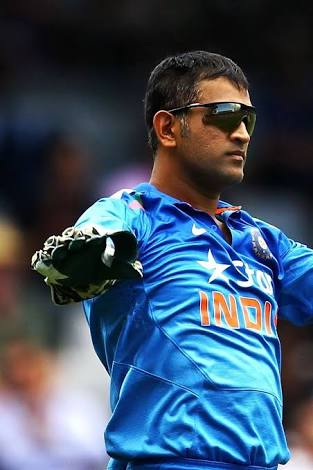
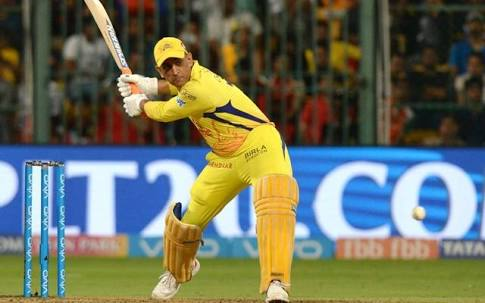
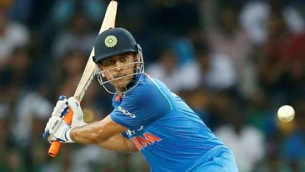
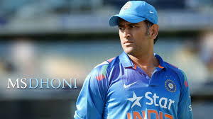
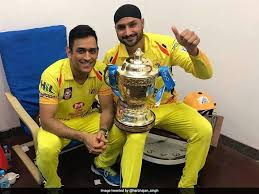
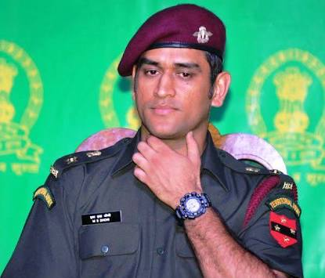

MS DHONI

dhoni era
Mahendra Singh Dhoni (About this sound pronunciation ) commonly known as MS Dhoni
Born 7 July 1981) is an Indian international cricketer who captained the Indian national team in limited-overs formats from 2007 to 2016 and in Test cricket from 2008 to 2014. An attacking right-handed middle-order batsman and wicket-keeper, he is widely regarded as one of the greatest finishers in limited-overs cricket.
He is also regarded as one of the best wicket-keepers in world cricket and is known to have very fast hands.[5][6] He made his One Day International (ODI) debut in December 2004 against Bangladesh, and played his first Test a year later against Sri Lanka.
Dhoni has been the recipient of many awards, including the ICC ODI Player of the Year award in 2008 and 2009 (the first player to win the award twice), the Rajiv Gandhi Khel Ratna award in 2007, the Padma Shri, India's fourth highest civilian honour, in 2009 and the Padma Bhushan, India's third highest civilian honour, in 2018.[7] He was named as the captain of the ICC World Test XI in 2009, 2010 and 2013. He has also been selected a record 8 times in ICC World ODI XI teams, 5 times as captain. The Indian Territorial Army conferred the honorary rank of Lieutenant Colonel[8] to Dhoni on 1 November 2011. He is the second Indian cricketer after Kapil Dev to receive this honour.
Dhoni also holds numerous captaincy records such as the most wins by an Indian captain in Tests, ODIs and T20Is, and most back-to-back wins by an Indian captain in ODIs. He took over the ODI captaincy from Rahul Dravid in 2007 and led the team to its first-ever bilateral ODI series wins in Sri Lanka and New Zealand. Under his captaincy, India won the 2007 ICC World Twenty20, the CB Series of 2007–08, the 2010 and 2016 Asia Cups, the 2011 ICC Cricket World Cup and the 2013 ICC Champions Trophy. In the final of the 2011 World Cup, Dhoni scored 91 not out off 79 balls handing India the victory for which he was awarded the Man of the Match. In June 2013, when India defeated England in the final of the Champions Trophy in England, Dhoni became the first captain to win all three ICC limited-overs trophies (World Cup, Champions Trophy and the World Twenty20). After taking up the Test captaincy in 2008, he led the team to series wins in New Zealand and West Indies, and the Border-Gavaskar Trophy in 2008, 2010 and 2013. In 2009, Dhoni also led the Indian team to number one position for the first time in the ICC Test rankings. In 2013, under his captaincy, India became the first team in more than 40 years to whitewash Australia in a Test series. In the Indian Premier League, he captained the Chennai Super Kings to victory at the 2010, 2011 and 2018 seasons, along with wins in the 2010 and 2014 editions of Champions League Twenty20. He announced his retirement from Tests on 30 December 2014.[9]
In 2011, Time magazine included Dhoni in its annual Time 100 list as one of the "Most Influential People in the World."[10] In 2012, SportsPro rated Dhoni as the sixteenth most marketable athlete in the world.[11] In June 2015, Forbes ranked Dhoni at 23rd in the list of highest paid athletes in the world, estimating his earnings at US$31 million.[12] In 2016, a biopic M.S. Dhoni: The Untold Story was made about him.
Dhoni holds the post of Vice-President of India Cements Ltd., after resigning from Air India. India Cements is the owner of the IPL team Chennai Super Kings, and Dhoni has been its captain since the first IPL season.[13][14] Dhoni is the co-owner of Indian Super League team Chennaiyin FC.[15] In 14 July 2018 during the second ODI against England, Dhoni became the first wicket-keeper for India and also became the fourth overall to take 300 catches in ODIs.[16] In the same match, he set another milestone for becoming the fourth Indian and the 12th overall player to reach 10,000 runs in ODI cricket, in fact went onto become only the second wicket-keeper batsman after Kumar Sangakkara to score 10,000 runs in

Start of ODI career
The Indian ODI team in the early 2000s saw Rahul Dravid as the wicket-keeper to ensure that the wicket-keeper spot didn't lack in batting talent.[57] The team also saw the entry of wicket-keeper/batsmen from the junior ranks, with talents like Parthiv Patel and Dinesh Karthik (both India U-19 captains) named in the Test squads.[57] With Dhoni making a mark in the India A squad, he was picked in the ODI squad for the Bangladesh tour in 2004/05.[59] Dhoni did not have a great start to his ODI career, getting run out for a duck on debut.[60] In spite of an average series against Bangladesh, Dhoni was picked for the Pakistan ODI series.
career status
In the second match of the series, Dhoni, in his fifth one-day international, scored 148 in Visakhapatnam off only 123 deliveries. Dhoni's 148 surpassed the earlier record for the highest score by an Indian wicket-keeper,[62] a record that he would re-write before the end of the year.
Dhoni had few batting opportunities in the first two games of the Sri Lankan bilateral ODI series (October–November 2005) and was promoted to No. 3 in the third ODI at Sawai Mansingh Stadium (Jaipur). Sri Lanka had set India a target of 299 after a Kumar Sangakkara century and, in reply, India lost Tendulkar early. Dhoni was promoted to accelerate the scoring and ended the game with an unbeaten 183 off 145 balls, winning the game for India.[63] The innings was described in Wisden Almanack (2006) as 'Uninhibited, yet anything but crude'.[64] The innings set various records including the highest individual score in ODI cricket in the second innings,[65] a record that still stands. Dhoni ended the series with the highest run aggregate (346)[66] and was awarded the Man of the Series award for his efforts. In December 2005, Dhoni was rewarded a B-grade contract by the BCCI.[67]
Dhoni bowling in the nets. He rarely bowls at international level.
India scored 328 in 50 overs with Dhoni contributing 68 in their first match of 2006 against Pakistan. However, the team finished poorly scoring just 43 runs in the last eight overs and lost the match due to Duckworth-Lewis method.[68] In the third match of the series, Dhoni came in with India in a precarious situation and scored 72 runs off just 46 balls that included 13 boundaries to help India take a 2–1 lead in the series.[69][70] The final match of the series had a repeat performance as Dhoni scored 77 runs off 56 balls to enable India win the series 4–1.[71] Due to his consistent ODI performances, Dhoni overtook Ricky Ponting as number one in the ICC ODI Rankings for batsmen on 20 April 2006.[72] His reign lasted just a week as Adam Gilchrist's performance against Bangladesh moved him to the top spot.[73]
Two cancelled series in Sri Lanka, one due to the withdrawal of South Africa from the Unitech Cup due to security concerns[74] and the replacement three-match ODI bilateral series against Sri Lanka washed due to rain,[75] was India's prelude to another disappointing tournament – DLF Cup 2006-07. Dhoni scored 43 runs as the team lost twice in three games and did not qualify for the finals. India's lack of preparation showed in the 2006 ICC Champions Trophy as they lost to West Indies and Australia, though Dhoni scored a half-century against West Indies. The story of the ODI series in South Africa was the same for both Dhoni and India as Dhoni scored 139 runs in 4 matches and India lost the series 4–0. From the start of the West Indies ODI series, Dhoni had played 16 matches, hit just two fifties and averaged 25.93. Dhoni received criticism on his wicket-keeping technique from former wicket-keeper Syed Kirmani.[76]

Preparation for 2007 worldcup
Preparations for the 2007 Cricket World Cup improved as India recorded identical 3–1 victories over West Indies and Sri Lanka and Dhoni had averages in excess of 100 in both these series.
2007 World Cup early exit
India unexpectedly crashed out of the World Cup after losses to Bangladesh and Sri Lanka in the group stage. Dhoni was out for a duck in both these matches and scored just 29 runs in the tournament. After the loss to Bangladesh in 2007 Cricket World Cup, the house that Dhoni was constructing in his home-town Ranchi was vandalised and damaged by political activists of JMM.[77] The local police arranged for security for his family as India exited the World Cup in the first round.[78]
Dhoni put his disappointing performances in the World Cup behind him by scoring 91* against Bangladesh, after India were left in a tight spot earlier in the run-chase. Dhoni was declared the Man of the Match for his performance, his fourth in ODI cricket. He was also later adjudged the Man of the Series after the third game of the series was washed away. Dhoni had a good Afro-Asia Cup, scoring 174 runs in 3 matches at an average of 87.00, with a blitzkrieg 139 not out off 97 balls, a Man of the Match innings, in the third ODI.
Dhoni was named vice-captain of the ODI team for the series against South Africa in Ireland and the subsequent India-England seven-match ODI series.[79] Dhoni, who received a 'B' grade contract in December 2005, was awarded an 'A' grade contract in June 2007. He was also elected as the captain of the Indian squad for the World Twenty20 in September 2007. On 2 September 2007, Dhoni equalled his idol Adam Gilchrist's international record for the most dismissals in an innings in ODI by catching five English players and stumping one.[80]
Rise through ranks
During the series between India and Australia, Dhoni hit an aggressive 124 runs in just 107 balls, in the second ODI, and a measured knock of 71 runs in 95 balls, along with Yuvraj Singh and saw India home by 6 wickets in the third ODI. Dhoni took his first wicket in international cricket on 30 September 2009. He bowled Travis Dowlin of the West Indies during a match of the 2009 Champions Trophy.
Dhoni batting against South Africa during the group stage match of 2013 ICC Champions Trophy
Dhoni topped the ICC ODI Batsman rankings for several months in 2009. Michael Hussey from Australia replaced him at the top spot at the beginning of 2010.[81]
Dhoni had an excellent year in ODIs in 2009, scoring 1198 runs in just 24 innings, at an astonishing average of 70.43. Dhoni was also the joint top-scorer in ODIs in 2009 along with Ricky Ponting, but the latter having played 30 innings.

2011 World Cup
India had a good start to the tournament beating Bangladesh. Dhoni led India to wins against Netherlands, Ireland and West Indies in the group stage. While they lost to South Africa and tied with England. India beat Australia in quarter finals and arch rivals Pakistan in semis.In the final clash with Sri Lanka at Mumbai, Dhoni played a knock of 91* to help India lift the cup. He was awarded the Man of the Match award.

2011 to 2016
On 12 February 2012, Dhoni made an unbeaten 44 to guide India to their first win over Australia at Adelaide. In the final over, he hit a monstrous six which traveled 112 metres off the bowling of Clint McKay. During the post-match presentation, he described this six as more important than the one he hit during the ICC World Cup final in 2011.[82]
India played a bilateral series against Pakistan after first time in five years. In the three match ODI series, Dhoni was India’s highest scorer in all three matches. In the first ODI at Chennai, he rescued India from 29/5 to help India post a total of 227 in 50 overs. He played a composed and calm knock of 113* and had a record partnership with Ravichandran Ashwin. He bagged the Man of the Match award in a losing cause. His efforts were in vain as India lost the series 2-1.
The 2013 Champions Trophy began in England and Wales. Dhoni led India to the top of group table beating South Africa, Pakistan and West Indies. They comfortably beat Sri Lanka in semi final. The final against England was reduced to 20 overs due to rain. Dhoni failed to make a mark with the bat, yet became the first captain to lift all three ICC trophies. India beat England by 5 runs.
In November 2013, Dhoni became the second India batsman after Sachin Tendulkar to aggregate 1,000 or more ODI-runs against Australia.[83]
India toured South Africa and New Zealand in 2013-14 season. India lost both the series 0-2 and 0-4 respectively. He scored 65 and 19 against South Africans while the third and final game was washed off. Against New Zealand, he managed 272 runs which included three consecutive fifties. His second fifty of the series in the third ODI helped India tie the match and eventually avoiding a five-nil whitewash.
India won the away series against England in 2014 by 3-1 and home series against West Indies 2-1. He had a good performance with the bat. He was rested for the home series against Sri Lanka which India won 5-0 under captaincy of Virat Kohli.
Dhoni again appeared in blue at the start of 2015. He led the team in tri-series against England and Australia. India had a poor performance in the tournament and failed to win a single match.
He led India as the defending champions to World Cup in Australia. India finished the group stage on high beating arch rivals Pakistan in their first match. Dhoni had useful contributions in wins against West Indies and Zimbabwe scoring two fifties. India faced Bangladesh in quarter final clash and won the match. In the process, Dhoni became the first non-Australian captain to win 100 ODI matches. India suffered huge loss to Australia in semis despite the some resistance he offered to Australian attack. He made 65 but was run out. India ended the consecutive winning streak of 11 matches and Dhoni failed to lift the cup twice unlike Clive Lloyd and Ricky Ponting.
India toured Bangladesh in June and suffered a setback as they lost series 1-2. India also lost first bilateral home series against South Africa in October 2015 by 2-3 margin. Dhoni scores 92* in the second ODI to help India register the first win of the tour.
India lost the series against Australia 1-4 as Dhoni failed to impress with the bat. Yet, he had useful contribution in final match in Sydney to help India chase 331. Dhoni led a young Indian side to series victory against Zimbabwe in June 2016. He did not get a chance to bat but India won the series 3-0.
In 2016-17 season, India beat New Zealand 3-2. He scored a stylish 80 in third ODI to help India chase 286. In meantime, he achieved the milestone to score 9000 ODI runs.
Quitting captaincy
Dhoni stepped down as captain of India in the limited over formats in January 2017, just ahead of the ODI series at home against England.[84] In the second game of the series, he scored 134 off 122 balls, that included a 256-run partnership for the fourth wicket along with Yuvraj Singh. The hundred, his tenth in ODIs, was his first in over three years.[85]
On 8 February 2018, Dhoni became the first Indian wicket-keeper to effect 400 dismissals in ODI cricket, he achieved this feat during the third ODI against South Africa following the stumping of Aiden Markram.[86]
Test career
Following his good one-day performance against Sri Lanka, Dhoni replaced Dinesh Karthik in December 2005 as the Indian teams' Test wicket-keeper.[87] Dhoni scored 30 runs in his debut match, that was marred by rain. Dhoni came to the crease when the team was struggling at 109/5 and as wickets kept falling around him, he played an aggressive innings in which he was the last man to be dismissed.[88] Dhoni made his maiden half-century in the second Test and his quick scoring rate (half century came off 51 balls) helped India set a target of 436 and the Sri Lankans were bowled out for 247.[89]
India toured Pakistan in January–February 2006 and Dhoni scored his maiden century in the second Test at Faisalabad. India was in a tight spot when Dhoni along wtih Irfan Pathan tried to steady the ship, with the team still needing 107 runs to avoid a follow-on. Dhoni played in his naturally aggressive style as he brought up his maiden Test hundred in just 93 balls after scoring the first fifty in just 34 deliveries.[90]
Dhoni followed up the century with some prosaic batting performances over the next three matches, one against Pakistan that India lost and two against England that had India holding a 1–0 lead. Dhoni was the top scorer in India's first innings in the third Test at Wankhede Stadium as his 64 helped India post a respectable 279 in reply to England's 400. However, Dhoni and the Indian fielders dropped catches and missed many dismissal chances, including a key stumping opportunity of Andrew Flintoff (14).[91] Dhoni failed to collect the Harbhajan Singh delivery cleanly as Flintoff went on to make 36 more runs as England set a target of 313 for the home team, a target that India was never in danger of threatening. A batting collapse saw the team being dismissed for 100 and Dhoni scored just 5 runs and faced criticism for his wicket-keeping lapses as well as his shot selection.
Dhoni behind the stumps
On the West Indies tour in 2006, Dhoni scored a quick and aggressive 69 in the first Test at Antigua. The rest of the series was unremarkable for Dhoni as he scored 99 runs in the remaining 6 innings but his wicket-keeping skills improved and he finished the series with 13 catches and 4 stumpings. In the Test series in South Africa later that year, Dhoni's scores of 34 and 47 were not sufficient to save the second Test against the Proteas, as India lost the series 2–1, squandering the chance to build on their first ever Test victory in South Africa (achieved in the first Test match). Dhoni's bruised hands ruled him out of the third Test match.[92]
On the fourth day of the first Test match at Antigua Recreation Ground, St John's, Antigua during India's tour of West Indies, 2006, Dhoni's flick off Dave Mohammed to the midwicket region was caught by Daren Ganga. As the batsman started to walk back, captain Dravid declared the innings when confusion started as the umpires were not certain if the fielder stepped on the ropes and Dhoni stayed for the umpire's verdict. While the replays were inconclusive, the captain of the West Indies side, Brian Lara, wanted Dhoni to walk off based on the fielder's assertion of the catch. The impasse continued for more than 15 minutes and Lara's temper was on display with finger wagging against the umpires and snatching the ball from umpire Asad Rauf. Ultimately, Dhoni walked off and Dravid's declaration was effected but the game was delayed, and Lara's action was criticised by the commentators and former players. Lara was summoned by the match referee to give an explanation of his actions but he was not fined.[93]
Dhoni scored two centuries in Sri Lanka's tour of India in 2009, a series of three matches in which he led India to a 2–0 victory. With this feat, India soared up to the number one position in Test cricket for the first time in history. India scored 726–9 (decl) in the third match of this series, which was their highest Test total then.[94]
He played his last series in the 2014–15 season in India's tour of Australia captaining India in the second and third tests; losing the second and drawing the third, trailing the series 2–0 before the Sydney Test. Following the third Test in Melbourne, Dhoni announced his retirement from the format.[95] In his last Test, he effected nine dismissals (eight catches and a stumping), and in the process, went past Kumar Sangakkara in the record for stumpings with 134 (in all three formats combined).[96] He also set a record for effecting the most dismissals in a match by an Indian wicketkeeper until it was broken by Wriddhiman Saha in 2018.[97] He finished his last innings unbeaten making 24 runs.
T20I career
Dhoni was a part of India’s first ever Twenty20 international match. He made debut against South Africa in December 2006. He was out for a duck but India won the match. He kept the wickets and effected one catch and a run out.
On 18 February 2018, Dhoni created a new wicketkeeping record of having taken 134 catches in 275 T20Is against South Africa in the first T20I following the catch of Reeza Hendricks, this record was previously held by Kumar Sangakkara.[98]
2007 T20 Worldcup
Ms Dhoni was chosen to lead India in first ever World T20 in 2007. He made his captaincy debut against Scotland but the match was washed off. Thereon, he led India to the ICC World Twenty 20 trophy in South Africa, with a victory over arch-rivals Pakistan in an intensely fought final on 24 September 2007, and became the second Indian captain to have won a World Cup in any form of cricket, after Kapil Dev.
Captain of India

Dhoni captaining India in an ODI in February 2012
Dhoni was named the captain of Indian squad for the inaugural ICC World Twenty20 held in South Africa in September 2007.[99] India were crowned champions as Dhoni led the team to victory against Pakistan in a thrilling contest.[100] He went on to become the ODI captain of the Indian team for the seven-match ODI series against Australia in September 2007.[101] He made his debut as full-time Test captain of India during the fourth and final Test against Australia at Nagpur in November 2008, replacing Anil Kumble who was injured in the third test and who then announced his retirement. Dhoni was vice-captain in this series up to that point.[102] India eventually won that Test, thus clinching the series 2–0 and retained the Border-Gavaskar Trophy. Dhoni had previously captained India on a stand-in basis against South Africa and Australia, in 2008 and 2009 respectively.
It was under his captaincy that India climbed to No. 1 in the ICC Test Rankings in December 2009. After that, he managed to lead India in a series-levelling world championship of Tests against the South Africans in February 2010. India also managed to draw the Test series 1–1 in South Africa later that year.
After winning the 2011 ICC Cricket World Cup final against Sri Lanka on 2 April 2011, with his match-winning knock of unbeaten 91, Tendulkar heaped praises on Dhoni, claiming him to be the best captain he has played under. Tendulkar mentioned that it was Dhoni's calm influence that was rubbing off on all his teammates and described Dhoni's handling of pressure as incredible.
Only eleven players have captained ten or more Tests playing as a wicket-keeper. Dhoni leads the table with 60 Tests as captain, 35 ahead of Mushfiqur Rahim in second place.[103]
In March 2013, Dhoni became the most successful Indian Test captain when he eclipsed Sourav Ganguly's record of 21 victories from 49 Tests.[104] Ganguly also said in an interview to a news channel that Dhoni is the all-time greatest captain of India and he has a great record to support this credential.
In August 2016, Dhoni was selected as captain for India's first tour to the United States, where India played two T20Is against the West Indies in Lauderhill, Florida.[105] India lost the first match on 27 August 2016, during which Dhoni surpassed former Australian captain Ricky Ponting to become the most experienced captain in international cricket.[106]
Dhoni's final game as the Indian limited-overs captain was on 10 January 2017, in a warm-up game between England and India during the limited-overs leg of England's tour of India. Dhoni stated he will still fulfil his duties as the captain in various domestic teams.
As captain of the Indian cricket team, Dhoni has seldom been suspended due to his team's slow over rate. In December 2009, he was suspended for two ODI matches against Sri Lanka by ICC match referee Jeff Crowe as India was three overs short of the specified rate; Virender Sehwag acted as captain for the two matches in Cuttack and Kolkata.[107] In January 2012 Dhoni was banned for the fourth Test match against Australia in Adelaide as India was two overs short during the third Test in Perth.[108] Sehwag captained the team in the Adelaide test and Wriddhiman Saha kept the wickets. In the CB Series in February, Dhoni again faced a one-match ban for slow-over rate against Australia.[109]
2007 Cricket World Cup
Dhoni played his first ODI World Cup in 2007 at the Caribbean. India made an early exit from the tournament in the Group Stage. In 2007 Cricket World Cup, India was placed in Group B with Sri Lanka, Bangladesh and Bermuda. Rahul Dravid captained the team in this World Cup. In three matches India played, they managed to win only one against Bermuda while losing the rest from Bangladesh and Sri Lanka. In their first match against Bangladesh, India was all out in just 191 in 49.3 overs. Dhoni was out for 0. He stumped Tamim Iqbal, Shakib Al Hasan and captain Habibul Bashar in the match but, India lost by 5 wickets. In the next match against Bermuda, India posted the then Highest Score in the World Cup 413/5 in a must-win match. Dhoni scored 29 off 25 Balls which includes Two 4s and One 6. India won the match by 257 runs. India was required to win their last group match against the Lankans, but they lost by 69 runs. Chasing the target of 255, India crumbled to 185 all out in 43.3 overs. Dhoni was dismissed for 0 for the second time in the tournament, off his very first ball by Muttiah Muralitharan. Thus, India was out of the world cup in the very first round. The Team was heavily criticized for their performance. Dhoni's under construction house in Ranchi was attacked by some 200 fans after the Bangladesh loss.
2011 Cricket World Cup
Under Dhoni's captaincy, India won the 2011 World Cup. In the final against Sri Lanka, chasing 275, Dhoni promoted himself up the batting order, coming before an in-form Yuvraj Singh. When he came to bat, India needed more than six runs per over with three top order batsmen already dismissed. He started building a good partnership with Gautam Gambhir. Due to good strokeplay and active running between wickets, they kept up with the required run rate. Dhoni was on 60 off 60 balls but later accelerated with a greater frequency of boundaries, ending with 91 not out off 79 balls. Befitting the occasion, he finished the match off in style with a huge six over long-on off bowler Nuwan Kulasekara and won the Man of the Match award. Later in the post-match presentation, he admitted that he came up the order so as to counter the Muralitharan spin threat, as he was very familiar with Murali's bowling, who was his teammate in the Indian Premier League (IPL) franchise Chennai Super Kings. He had come after the dismissal of Virat Kohli, also a right-handed batsman. By partnering the left-handed Gambhir, he ensured a right-left combination at the crease that makes it difficult for bowlers to settle into a rhythm.
The bat used by Dhoni in the final match was sold for ₹ 72 Lac. The money goes to Sakshi Rawat Foundation, operated by Dhoni's wife Sakshi Rawat to help orphan children.[110]